| 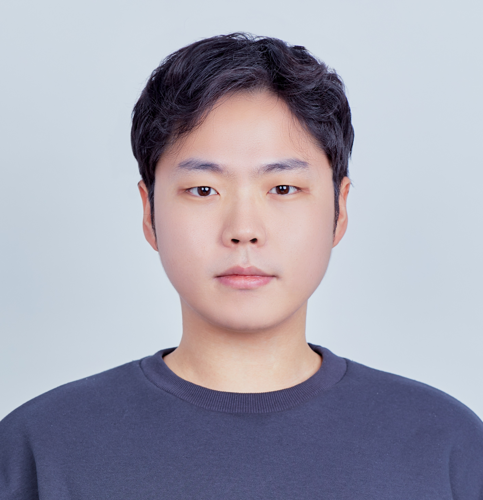 |
Hwanjun Song
Amazon Web Services Inc. Email: hwanjunsxkxkxk@amazon.com / ghkswns91xkxkxk@gmail.com |
Feb 2023: A Paper on 'Federated Active Learning' accepted at CVPR 2023.
Jan 2023: A Paper on 'Continual Learning' accepted at ICLR 2023.
Jan 2023: A Paper on 'Data-centric AI' accepted at VLDB Journal 2023.
Publications Google scholar profile An underline indicates the corresponding author.| 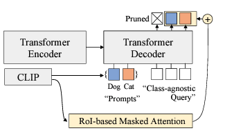 | H. Song, J. Bang. Prompt-Guided Transformers for End-to-End Open-Vocabulary Object Detection. Preprint arXiv 2023. [pdf] [code] |
| 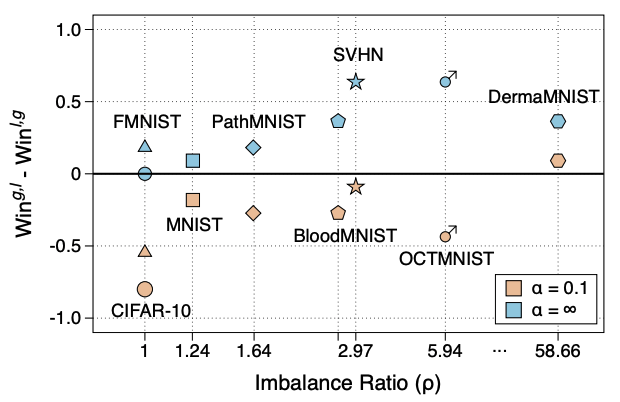 | S. Kim, S, Bae, H. Song, SY. Yun. Re-thinking Federated Active Learning based on Inter-class Diversity. International Conference on Computer Vision and Pattern Recognition (CVPR) 2023. |
| 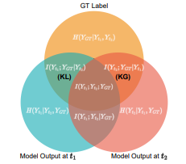 | H. Koh, M. Seo, J. Bang, H. Song, D. Hong, S. Park, JW. Ha, J. Choi. Online Boundary-Free Continual Learning by Scheduled Data Prior. International Conference on Learning Representations (ICLR) 2023 . [pdf] |
| 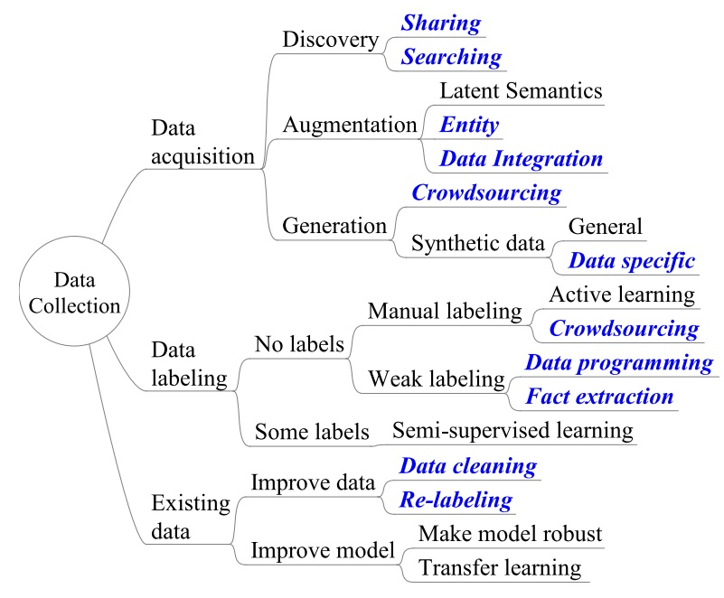 | S. E. Whang, Y. Roh, H. Song, JG. Lee. Data Collection and Quality Challenges in Deep Learning: A Data-Centric AI Perspective. The VLDB Journal 2023. [pdf] |
| 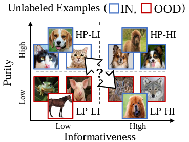 | D. Park, Y. Shin, J. Bang, Y. Lee, H. Song, JG. Lee. Meta-Query-Net: Resolving Purity-Informativeness Dilemma in Open-set Active Learning. Annual Conference on Neural Information Processing Systems (NeurIPS) 2022. [pdf] [code] |
| 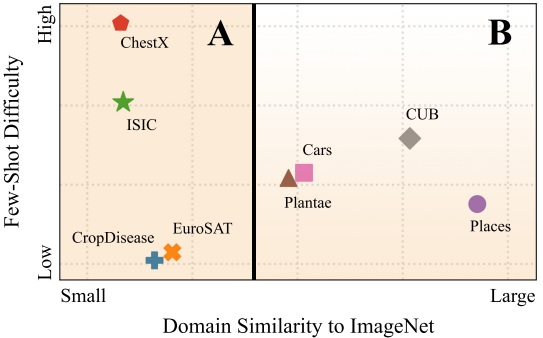 | J. Oh, S. Kim, N. Ho, JH. Kim, H. Song, SY. Yun. Understanding Cross-domain Few-shot Learning: An Experimental Study. Annual Conference on Neural Information Processing Systems (NeurIPS) 2022. [pdf] [code] |
| 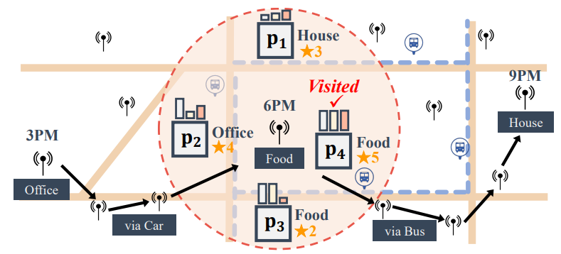 | D. Park, J. Kang, H. Song, S. Yoon, JG Lee. Multi-view POI-level Cellular Trajectory Reconstruction for Digital Contact Tracing of Infectious Diseases. International Conference on Data Minig (ICDM) 2022. |
| 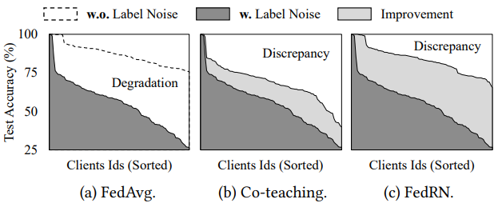 | S. Kim, W. Shin, S. Jang, H. Song, SY. Yun. FedRN: Exploiting k-Reliable Neighbors Towards Robust Federated Learning. International Conference on Information and Knowledge Management (CIKM) 2022. [pdf] |

|
W. Shin, J. Park, T. Woo, Y. Cho, K. Oh, H. Song. e-CLIP: Large-Scale Vision-Language Representation Learning in E-commerce. International Conference on Information and Knowledge Management (CIKM) 2022. The first large-scale industry study investigating a unified multimodal transformer model. [pdf] |
| 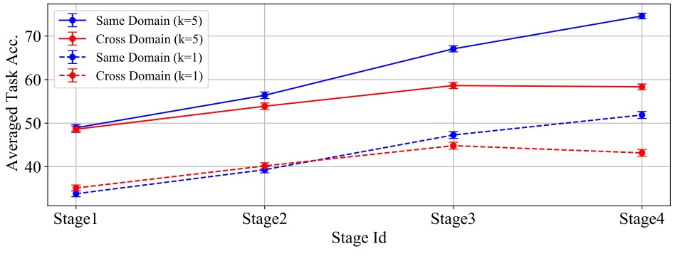 | J. Oh, S. Kim, N. Ho, JH. Kim, H. Song, SY. Yun. ReFine: Re-randomization before Fine-tuning for Cross-domain Few-shot Learning. International Conference on Information and Knowledge Management (CIKM) 2022. This paper was also presented at ICML UpML workshop, 2022. [pdf] |
| 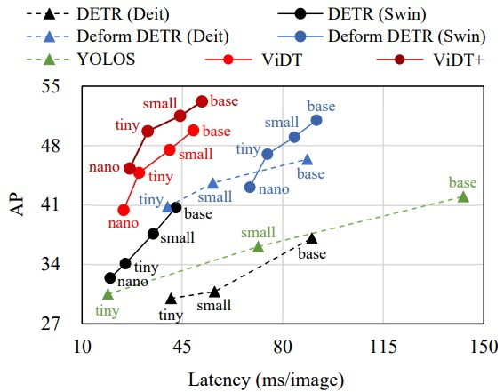 | H. Song, D. Sun, S. Chun, V. Jampani, D. Han, B. Heo, W. Kim, and M-H Yang. An Extendable, Efficient and Effective Transformer-based Object Detector. Preprint arXiv 2022. An extended version of ViDT to support multi-task learning. [pdf] [code] |
| 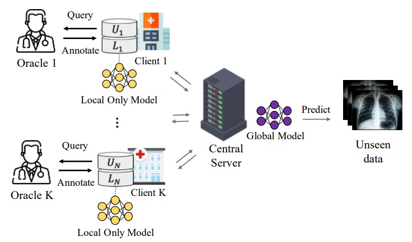 | S. Kim, S. Bae, H. Song, SY. Yun. LG-FAL: Federated Active Learning Strategy using Local and Global Models. International Conference on Machine Learning (ReALML Workshop) 2022. |
| 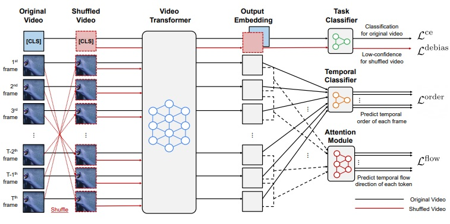 | S. Yun, J. Kim, D. Han, H. Song, JW. Ha, J. Shin. Time Is MattEr: Temporal Self-supervision for Video Transformers. International Conference on Machine Learning (ICML) 2022. Short Presentation. |
| 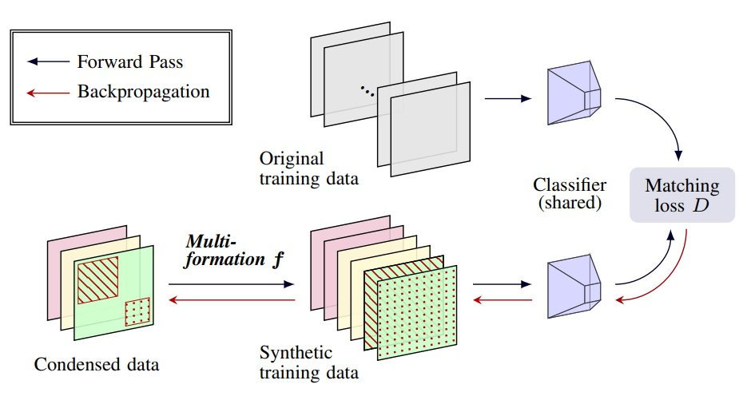 | JH. Kim, J. Kim, SJ. Oh, S. Yun, H. Song, J. Jeong, JW. Ha, HO. Song. Dataset Condensation via Efficient Synthetic-Data Parameterization. International Conference on Machine Learning (ICML) 2022. Short Presentation. [pdf] [code] |
| 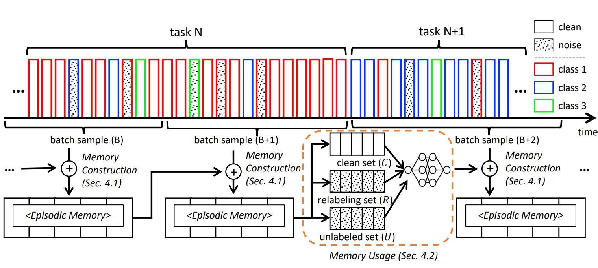 | J. Bang, H. Koh, S. Park, H. Song, JW. Ha, J. Choi. Online Continual Learning on a Contaminated Data Stream with Blurry Task Boundaries. International Conference on Computer Vision and Pattern Recognition (CVPR) 2022. [pdf] [code] |
| 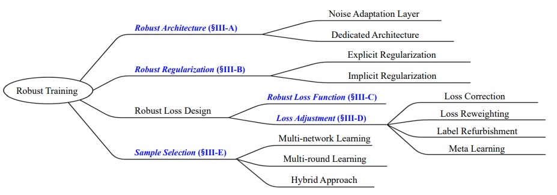 | H. Song, M. Kim, D. Park, Y. Shin, JG. Lee. Learning from Noisy Labels with Deep Neural Networks: A Survey. IEEE Transactions on Neural Networks and Learning Systems (TNNLS) 2022. The most cited survey paper on handling noisy labels with DNNs. [pdf] [code] |

|
H. Song, D. Sun, S. Chun, V. Jampani, D. Han, B. Heo, W. Kim, and M-H Yang. ViDT: An Efficient and Effective Fully Transformer-based Object Detector. International Conference on Learning Representations (ICLR) 2022. [pdf] [code] |
| 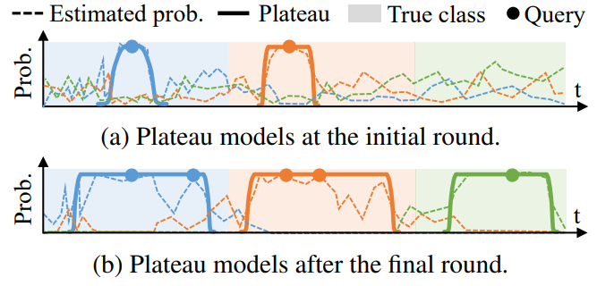 | Y. Shin, S. Yoon, S. Kim, H. Song, JG. Lee, B. S. Lee. Coherence-based Label Propagation over Time Series for Accelerated Active Learning. International Conference on Learning Representations (ICLR) 2022. [pdf] [code] |
| 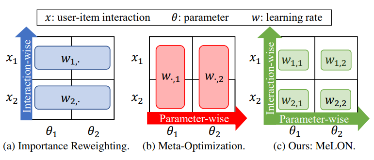 | M. Kim, H. Song, Y. Shin, D. Park, K. Shin, JG. Lee. Meta-Learning for Online Update of Recommender Systems. The AAAI Conference on Artificial Intelligence (AAAI) 2022. [pdf] |
| 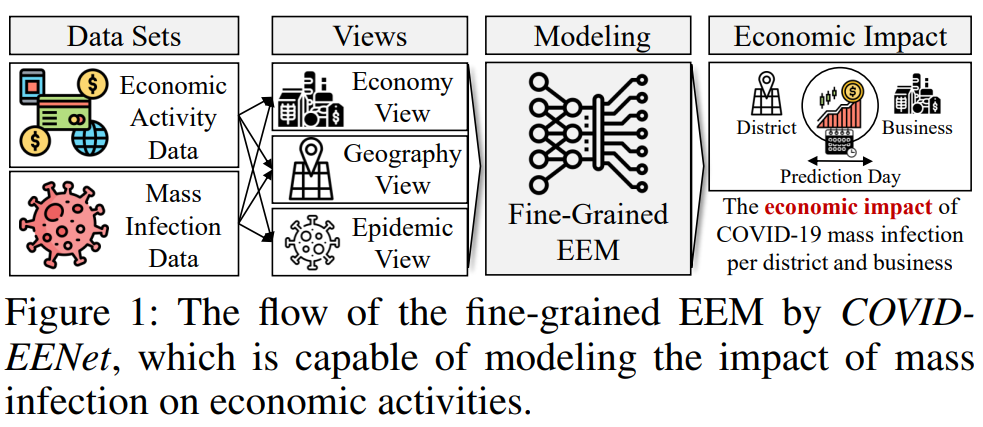 | D. Kim, H. Min, Y. Nam, H. Song, S. Yoon, M. Kim, JG. Lee. COVID-EENet: Predicting Fine-Grained Impact of COVID-19 on Local Economies . The AAAI Conference on Artificial Intelligence (AAAI) 2022. Oral Presentation. [pdf] [code] |
| 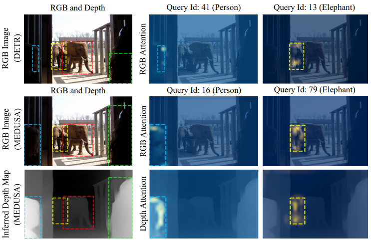 | H. Song, E. Kim, V. Jampani, D. Sun, M-H. Yang. Exploiting Scene Depth for Object Detection with Multimodal Transformers. British Machine Vision Conference (BMVC) 2021. [pdf] [code] |
| 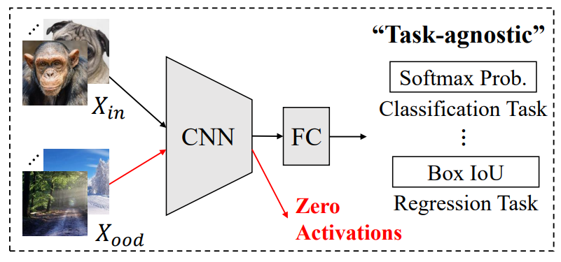 | D. Park, H. Song, M. Kim, JG. Lee. Task-Agnostic Undesirable Feature Deactivation Using Out-of-Distribution Data. Annual Conference on Neural Information Processing Systems (NeurIPS) 2021. [pdf] [code] |
| 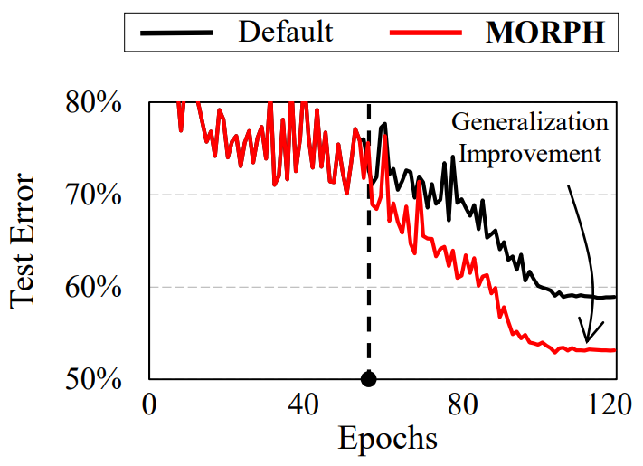 | H. Song, M. Kim, D. Park, Y. Shin, JG. Lee. Robust Learning by Self-Transition for Handling Noisy Labels. International Conference on Knowledge Discovery and Data Mining (KDD) 2021. Oral Presentation. [pdf] |
| 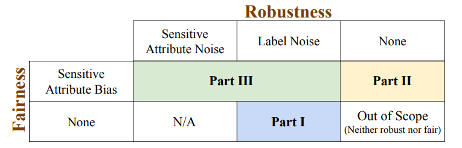 | JG. Lee, Y. Roh, S. E. Whang. Machine Learning Robustness, Fairness, and their Convergence. . International Conference on Knowledge Discovery and Data Mining (KDD) 2021. 2+ Hour Live Tutorial. [webpage] [pdf] [video] [slide] |
| 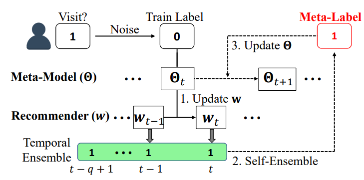 | M. Kim, H. Song, D. Kim, K. Shin, JG. Lee. PREMERE: Meta-Reweighting via Self-Ensembling for Point-of-Interest Recommendation. The AAAI Conference on Artificial Intelligence (AAAI) 2021. Oral Presentation. [pdf] [code] |
| 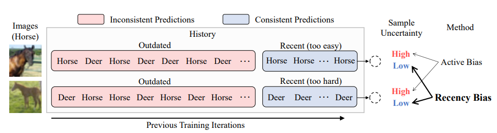 | H. Song, M, Kim, S. Kim, JG. Lee. Carpe Diem, Seize the Samples Uncertain "At the Moment" for Adaptive Batch Selection. International Conference on Information and Knowledge Management (CIKM) 2020. Oral Presentation. [pdf] [code] |
| 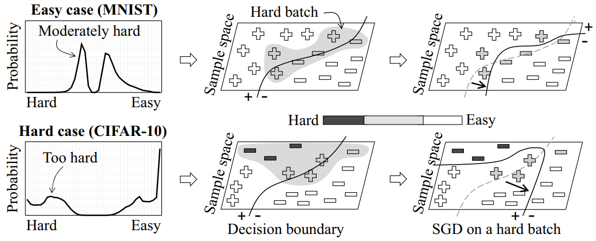 | H. Song, S. Kim, M. Kim, JG. Lee. Ada-Boundary: Accelerating DNN Training via Adaptive Boundary Batch Selection. Machine Learning (ML) 2020. Invited Paper and Oral Presentation at ECML-PKDD 2020. [pdf] [code] |
| 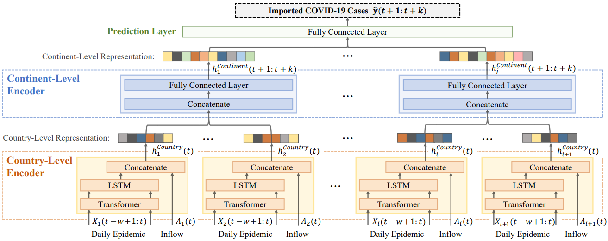 | M. Kim, J. Kang, Dim, H. Song, H. Min, Y. Nam, D. Park, JG. Lee. Hi-COVIDNet: Deep Learning Approach to Predict Inbound COVID-19 Patients and Case Study in South Korea . International Conference on Knowledge Discovery and Data Mining (KDD) 2020. Oral Presentation. [pdf] [code] |
| 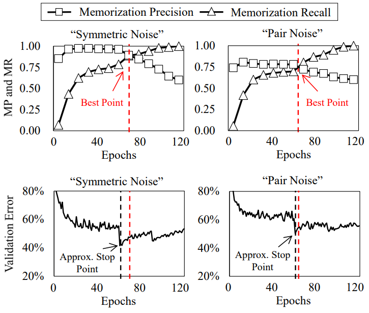 | H. Song, M. Kim, D. Park, JG. Lee. How Does Early Stopping Help Generalization against Label Noise? . International Conference on Machine Learning (UDL Workshop) 2020. [pdf] [code] |
| 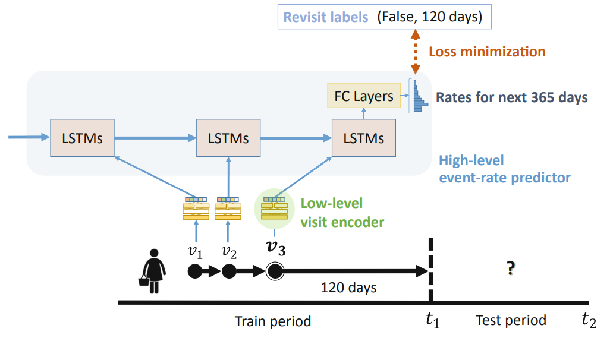 | S. Kim, H. Song, S. Kim, B. Kim, JG. Lee. Revisit Prediction by Deep Survival Analysis. Pacific-Asia Conference on Knowledge Discovery and Data Mining (PAKDD) 2020. [pdf] |
| 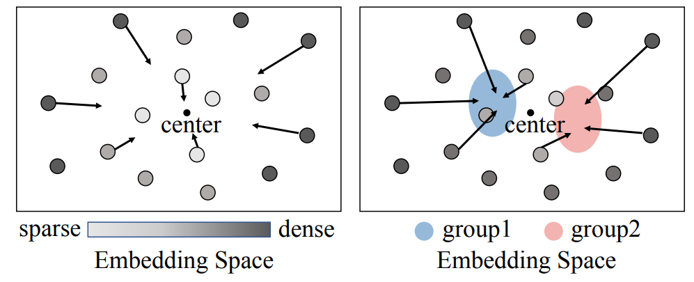 | D. Park, H. Song, M. Kim, JG. Lee. TRAP: Two-level Regularized Autoencoder-based Embedding for Power-law Distributed Data. TheWebConf (WWW) 2020. Oral Presentation. [pdf] [code] |
| 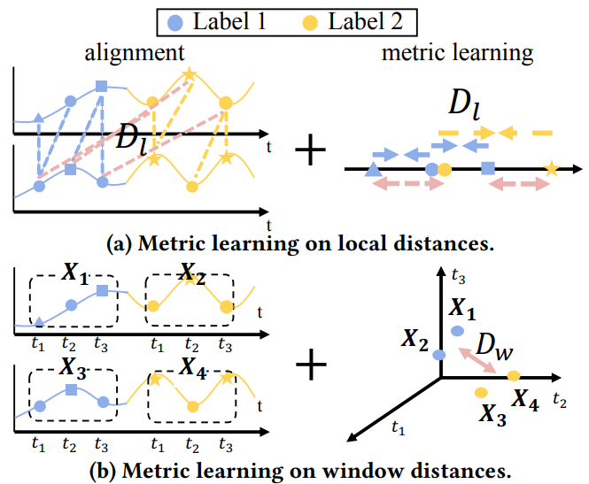 | D. Park, S. Yoon, H. Song, JG. Lee. MLAT: Metric Learning for kNN in Streaming Time Series. International Conference on Knowledge Discovery and Data Mining (MileTs Workshop) 2019. [pdf] |
| 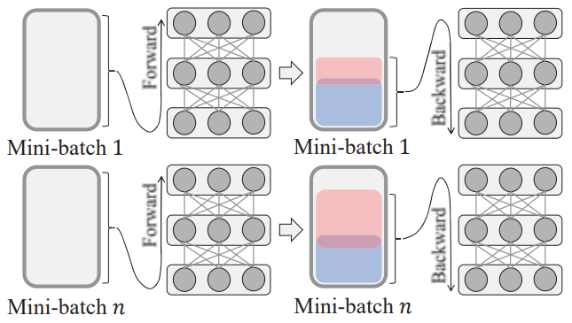 | H. Song, M. Kim, JG. Lee. SELFIE: Refurbishing Unclean Samples for Robust Deep Learning. International Conference on Machine Learning (ICML) 2019. Short Presentation. [pdf] [code] [dataset] |
| 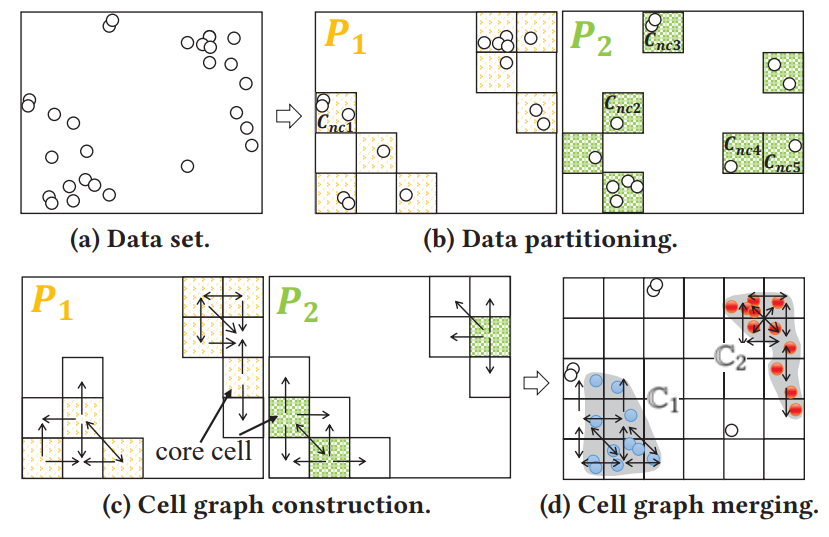 | H. Song, JG. Lee. RP-DBSCAN: A Superfast Parallel DBSCAN Algorithm based on Random Partitioning. International Conference on Management of Data (SIGMOD) 2018. Top 2% of the submitted papers (accepted without revision round). Oral Presentation. [pdf] [code] |
| 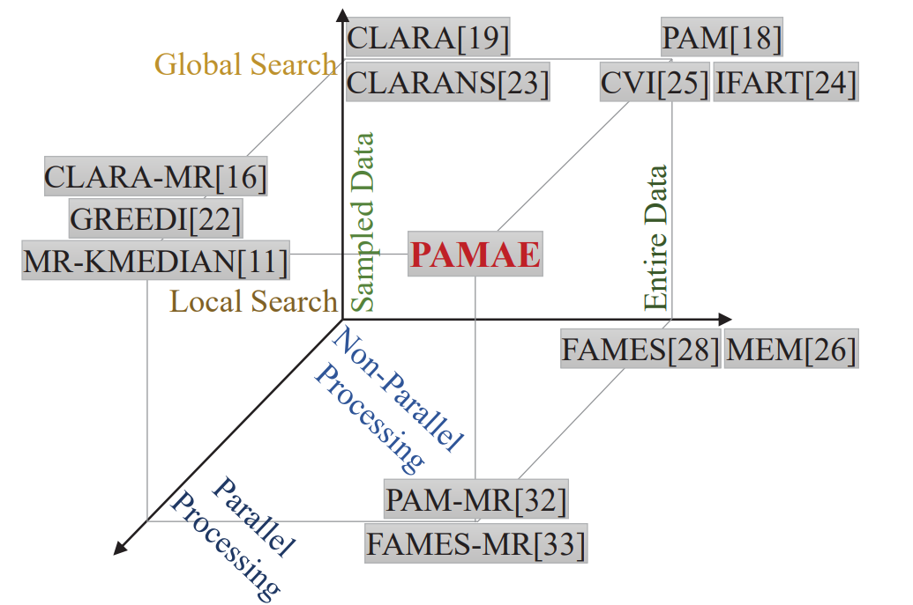 | H. Song, JG. Lee, WS. Han. PAMAE: Parallel k-Medoids Clustering with High Accuracy and Efficiency. International Conference on Knowledge Discovery and Data Mining (KDD) 2017. Selected one of the outstanding research among Microsoft Azure Supporting Projects. [blog] [pdf] [code] |
Services
Co-organized Workshop on Machine Learning Robustness, Fairness, and their Convergence at KDD 2021
Reviewer for ICML, NeurIPS, ICLR, CVPR, ICCV, ECCV, PAMI, IJCV, TNNLS since 2020
Seminar / Techtalk Data Robustness and Efficiency, Vision Transformers, and Continual Learning, GIST and IEEE Seminar, Dec 2022 [slides] ML Robustness against Label Noise, UNIST Graduate School of AI, Sep 2022 Robust Deep Learning and Extension to Real-world Applications, Database Society Summer School, Aug 2022 An Extendable, Efficient and Effective Tranformer-based Object Detector, NAVER CLOVA, Jun 2022 ML Robustness against Label Noise, Amazon AWS AI / Responsible AI, Mar 2022 Transformers for Computer Vision, Electronics and Telecommunications Research Institute, Feb 2022 Machine Learning Robustness, Fairness, and their Convergence, KDD Tutorial, Aug 2021 Robust Learning by Self-transition for Handling Noisy Labels, NAVER CLOVA, May 2021 Learning from Noisy Labels for Classification, Google Research, May 2021 Exploiting Scene Depth for Object Detection, Google Research & NAVER AI Lab, Dec 2020 Robust Learning under Label Noise, Institute of Basic Science, Dec 2019 Parallel Clustering and Large-Scale Data Analytics, NAVER CLOVA, Aug 2018
Students
I have been fortunate to work with many gifted students:
- Minseok Kim (KAIST → Amazon Alexa), 2019-2022
- Dongmin Park (KAIST), 2020-2022
- Yooju Shin (KAIST), 2020-2022
- Doyoung Kim (KAIST), 2020-2022
- Sangmook Kim (KAIST), 2021-2022
- Jaehoon Oh (KAIST), 2021-2022
- Seulki Park (Seoul National University), 2021-2022
- Saehyung Lee (Seoul National University), 2022
- Sangmin Bae (KAIST), 2022
- Dahuin Jung (Seoul National University), 2022
© 2022 Hwanjun Song Thanks Dr. Deqing Sun and Dr. Ce Liu for the template.